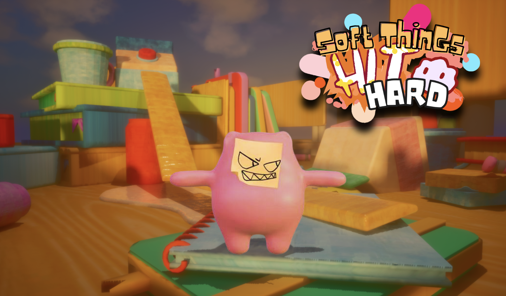

Soft Things Hit Hard

Soft Things Hit Hard is an online third-person party battle royale where squishy, play-doh-like creatures scavenge everyday objects, assemble improvised weapons and armor, and fight to be the last blob standing.
Players explore oversized tabletop environments, turning ordinary objects into tools for combat in a chaotic multiplayer experience built around scavenging, customization, and fighting.
Role: Games Engineer & Audio Designer
Project: Advanced Senior Project
Team: 30+ Developers
Engine: Unreal Engine
Development: C++ & Blueprint
The core gameplay loop combines exploration, equipment building, and multiplayer combat.
Project Documentation
I recently joined the Soft Things Hit Hard team as a Games Engineer and Audio Designer, contributing to the continued development and polish of the multiplayer experience.
Development currently in progress.
This section will document the gameplay systems and engineering features I personally develop for the project as production continues.
More details coming as development progresses.
Alongside gameplay engineering, I am contributing to the audio side of the project, helping develop and implement sound that communicates player actions, combat interactions, and gameplay feedback.
Audio work currently in development.
Soft Things Hit Hard is being developed as a multidisciplinary Advanced Senior Project with more than 30 team members. The production environment involves coordinating engineering work with design, art, audio, and production while contributing to an established Unreal Engine project.